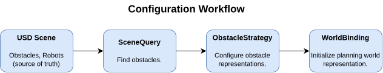
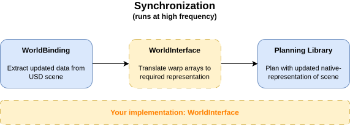
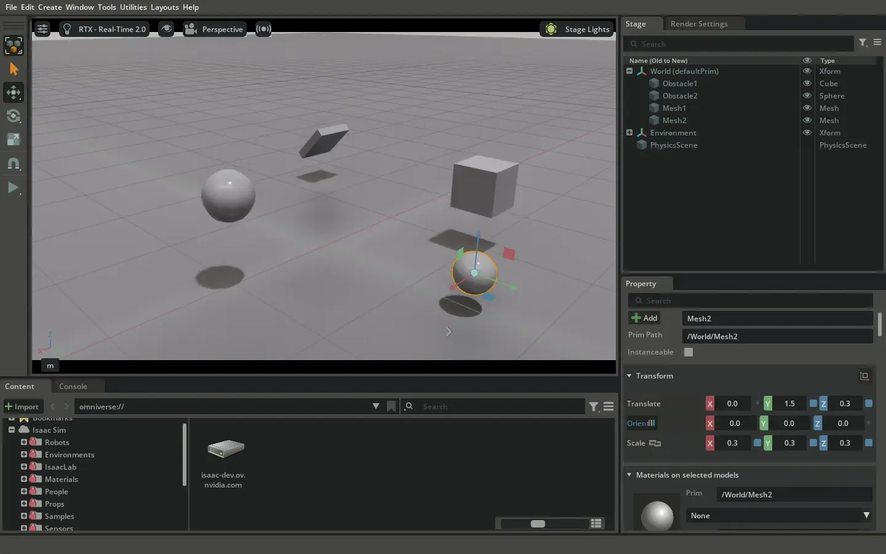

Scene Interaction#
The Motion Generation API provides tools for interacting with the USD scene to support motion planning. These tools separate motion generation collision modeling from simulation collision modeling, giving you flexibility in how you represent the world.
All code examples in this section are drawn from a single, complete, runnable example file:
# Scene interaction with SceneQuery, WorldInterface, ObstacleStrategy, and WorldBinding
./python.sh standalone_examples/api/isaacsim.robot_motion.experimental.motion_generation/scene_interaction_example.py
SceneQuery: Finding Objects#
SceneQuery lets you search the USD scene for objects matching specific criteria.
It’s useful for finding obstacles, robots, or other objects in your scene.
The most common use is finding collision objects in a region:
def demonstrate_scene_query():
"""Demonstrate using SceneQuery to find objects in the scene."""
# Create a scene query
query = mg.SceneQuery()
# Find all collision objects in a bounding box
# This searches for prims with PhysicsCollisionAPI in the specified region
search_origin = [0.0, 0.0, 0.0] # Center of search region
search_min = [-2.0, -2.0, -0.5] # Minimum bounds (relative to origin)
search_max = [2.0, 2.0, 1.5] # Maximum bounds (relative to origin)
collision_objects = query.get_prims_in_aabb(
search_box_origin=search_origin,
search_box_minimum=search_min,
search_box_maximum=search_max,
tracked_api=mg.TrackableApi.PHYSICS_COLLISION,
)
# You can also exclude specific prims (e.g., the robot itself)
# In this example, we exclude the ground plane
filtered_objects = query.get_prims_in_aabb(
search_box_origin=search_origin,
search_box_minimum=search_min,
search_box_maximum=search_max,
tracked_api=mg.TrackableApi.PHYSICS_COLLISION,
exclude_prim_paths=["/Environment/groundCollider"], # Exclude ground plane (and children) from results
)
# Find all robots in the stage (if any)
robots = query.get_robots_in_stage()
return filtered_objects
SceneQuery uses TrackableApi to filter which USD APIs to search for. Currently supported APIs include:
PHYSICS_COLLISION- Objects with collision geometryPHYSICS_RIGID_BODY- Rigid body objects
You can also include or exclude specific prim paths and their children, making it easy to filter out the robot itself or focus on specific regions.
ObstacleStrategy: Representation Management#
ObstacleStrategy manages how USD scene objects are represented when passed to your planning library.
It configures ObstacleConfiguration objects, which define both the representation type and safety tolerance for each obstacle.
ObstacleConfiguration Structure#
An ObstacleConfiguration is a structure containing two components:
Representation - How the obstacle is represented in your planning library (for example, sphere, mesh, oriented bounding box)
Safety tolerance - A padding distance applied around the obstacle for collision avoidance
Valid Representations per USD Type#
Each USD shape type (Sphere, Cube, Mesh) has its own set of valid representations it can use:
Sphere - Can be represented as
SPHEREorOBBCube - Can be represented as
CUBEorOBBMesh - Can be represented as
MESH,TRIANGULATED_MESH, orOBBCone, Capsule, Cylinder - Can be represented as their native shape or
OBBPlane - Can only be represented as
PLANE
Note
Since ObstacleRepresentation is a StrEnum, you can use either the enum value (e.g., ObstacleRepresentation.OBB) or the string directly (e.g., "obb") when creating ObstacleConfiguration objects.
Note
Additional representation types will be added in future versions of the API.
ObstacleStrategy Management#
ObstacleStrategy uses a three-tier priority system to determine the configuration for each obstacle. By default, each shape type is represented by its native representation with zero safety tolerance (e.g., a Mesh object maps to MESH representation with 0.0 safety tolerance).
Default Configurations and Global Safety Tolerance
The built-in defaults map each shape type to its native representation. You can adjust the safety tolerance for all these default mappings using ObstacleStrategy.set_default_safety_tolerance(). This convenience method affects only the default configurations and does not modify shape-level overrides or prim-level overrides.
Shape-Level Overrides
ObstacleStrategy.set_default_configuration() allows you to set a configuration override for an entire shape type (e.g., all Mesh objects). These shape-level overrides take precedence over the default configurations and any global safety tolerance setting. For example, you can configure all Mesh objects to use OBB representation with a specific safety tolerance, regardless of the default settings.
Prim-Level Overrides
ObstacleStrategy.set_configuration_overrides() sets configuration overrides for specific prim paths. These prim-level overrides have the highest priority and take precedence over both default configurations and shape-level overrides. This allows you to customize individual obstacles (e.g., a specific Mesh prim uses TRIANGULATED_MESH representation) while maintaining shape-level defaults for other objects of the same type.
When querying the configuration for a specific obstacle, ObstacleStrategy checks these tiers in priority order: prim-level overrides first, then shape-level overrides, and finally default configurations.
Here’s how to configure an ObstacleStrategy:
def demonstrate_obstacle_strategy(obstacle_paths):
"""Demonstrate configuring obstacle representations with ObstacleStrategy."""
# Create an obstacle strategy
strategy = mg.ObstacleStrategy()
# Set default representation for Mesh shape type to OBB with large safety tolerance
# of 0.15 meters.
strategy.set_default_configuration(Mesh, mg.ObstacleConfiguration("obb", 0.15))
# Set per-object overrides for specific prims
# Mesh2 needs more faithful representation for interaction, so use triangulated mesh
# with smaller safety tolerance (1cm)
overrides = {}
mesh2_path = "/World/Mesh2"
if mesh2_path in obstacle_paths:
overrides[mesh2_path] = mg.ObstacleConfiguration("triangulated_mesh", 0.01)
strategy.set_configuration_overrides(overrides)
# Set default safety tolerance for all other shapes
# This will be overridden for all Mesh types (which will have 15cm padding),
# And for "/World/Mesh2" (which will have 1cm padding).
strategy.set_default_safety_tolerance(0.05) # 5cm padding
return strategy
WorldInterface: Connecting to Motion Planning Libraries#
WorldInterface is an abstract interface that acts as a bridge between obstacle data and your
motion planning library.
Different motion planning libraries have their own world representations.
The WorldInterface lets you translate obstacle data (positions, orientations, shapes) into whatever format your
planning library expects.
You implement WorldInterface by creating a class that:
Takes obstacle data as warp arrays and data structures (not USD objects directly)
Implements methods for adding obstacles (spheres, boxes, meshes) to your planning library
Implements methods for updating obstacle transforms and properties
Think of WorldInterface as an adapter: it receives obstacle data as warp arrays and converts it into the format your specific motion planning library needs.
To get obstacle data, you can use WorldBinding, which handles USD scene extraction and outputs warp arrays.
Because both WorldBinding outputs and WorldInterface inputs are warp arrays, the system is modular; you can insert intermediate processing steps between them,
such as perception algorithms, noise injection, filtering, or any other data transformation you need.
Here are examples of the three main types of methods you’ll implement:
Adding obstacles - Initialize objects in your planning world:
def add_spheres(self, prim_paths, radii, scales, safety_tolerances, poses, enabled_array):
"""Add spheres to your planning library using the provided data.
Args:
prim_paths: Prim paths (Useful as unique identifiers)
radii: Sphere radii as warp array (shape [N, 1])
scales: Scale factors as warp array
safety_tolerances: Safety margins as warp array (shape [N, 1])
poses: Tuple of (positions, orientations) as warp arrays
enabled_array: Enabled flags as warp array (shape [N, 1])
"""
positions, orientations = poses
for i, path in enumerate(prim_paths):
# Extract data from warp arrays (all are shape [N, 1])
radius = radii.numpy()[i, 0] + safety_tolerances.numpy()[i, 0]
position = positions.numpy()[i]
orientation = orientations.numpy()[i]
# Add to your planning library here!
# e.g., self.world_model.add_sphere(path, radius, position, orientation)
self.obstacles[path] = {
"type": "sphere",
"radius": radius,
"position": position,
"orientation": orientation,
}
Updating transforms - Used frequently for real-time updates, or just before creating a trajectory plan:
def update_obstacle_transforms(self, prim_paths, poses):
"""Update transforms of existing obstacles in your planning library.
Called frequently for real-time updates, or just before creating a trajectory plan.
Args:
prim_paths: Prim paths of obstacles to update
poses: Tuple of (positions, orientations) as warp arrays
"""
positions, orientations = poses
for i, path in enumerate(prim_paths):
if path in self.obstacles:
# Extract positions and orientations from warp arrays
position = positions.numpy()[i]
orientation = orientations.numpy()[i]
# Update transforms in your planning library
# e.g., self.world_model.update_obstacle_pose(path, position, orientation)
self.obstacles[path]["position"] = position
self.obstacles[path]["orientation"] = orientation
Updating properties - Called when shape properties change:
def update_sphere_properties(self, prim_paths, radii):
"""Update sphere-specific properties for existing obstacles.
Called when shape properties change (e.g., radius changes).
Args:
prim_paths: Prim paths of spheres to update
radii: New sphere radii as warp array (shape [N, 1]), or None to skip
"""
if radii is None:
return
for i, path in enumerate(prim_paths):
if path in self.obstacles and self.obstacles[path]["type"] == "sphere":
# Extract new radius from warp array
new_radius = radii.numpy()[i, 0]
# Update sphere properties in your planning library
# e.g., self.world_model.update_sphere_radius(path, new_radius)
self.obstacles[path]["radius"] = new_radius
WorldBinding: Synchronizing the Planning Library#
WorldBinding is a convenience class that automatically:
Tracks specified prims in the USD scene
Uses
ObstacleStrategyto determine how they should be representedExtracts obstacle data (positions, orientations, shapes) from USD
Calls your
WorldInterfaceimplementation with this data to add or update obstacles in your planning library world representation
This keeps your planning library’s world representation in sync with the simulation scene. The WorldBinding handles all the USD interaction, your WorldInterface only needs to work with the extracted data.
To use WorldBinding with your WorldInterface implementation:
def demonstrate_world_binding(obstacle_paths, obstacle_strategy):
"""Demonstrate using WorldBinding to synchronize scene to planning library."""
# Create WorldInterface adapter for your planning library
world_interface = ExampleWorldInterface()
# Create world binding
binding = mg.WorldBinding(
world_interface=world_interface,
obstacle_strategy=obstacle_strategy,
tracked_prims=obstacle_paths,
tracked_collision_api=mg.TrackableApi.PHYSICS_COLLISION,
)
# Initialize the binding (populates your planning library's world)
binding.initialize()
# In your simulation loop, you would call:
# binding.synchronize_transforms() # Fast: updates only poses (use every frame for moving obstacles)
# binding.synchronize_properties() # Slower: updates shape properties (use less frequently)
# binding.synchronize() # Convenience: calls both methods above
return binding, world_interface
The WorldBinding uses USDRT change tracking for efficient updates. It only updates objects properties that have actually changed.
Note
Scene Validation During Initialization
When you call WorldBinding.initialize(), the binding automatically performs scene validation
on all tracked prims. For each tracked prim, it searches all parent prims in the hierarchy to ensure:
No parent prims have local scaling other than [1,1,1] (identity scaling)
No parent prims have point scaling (
xformOp:scale:unitsResolve) other than [1,1,1] (unity scaling)
This validation prevents unexpected shearing of reference frames that can occur when non-identity
scaling is applied to ancestor prims. If any invalid ancestors are found, initialization will raise
an AssertionError with details about which prims have invalid scaling.
In general, you should avoid putting non-uniform scaling (or any scaling other than [1,1,1]) on any prim that has child prims. This restriction may be loosened in the future, but for now it ensures that local scales match world scales, which is required for correct world-space operations.
Synchronization Methods#
WorldBinding provides three methods for synchronizing the planning library with the USD scene:
WorldBinding.synchronize_transforms()- Very fast, updates all tracked obstacle poses (positions and orientations). Use this when only transforms change, such as when rigid body obstacles are moving. This is the most efficient synchronization method.WorldBinding.synchronize_properties()- Can be slow, updates shape properties (collision enables, shape-specific attributes) using USDRT change tracking. Only objects with property changes are updated. Use this when obstacle properties (like collision enable state or shape attributes) may have changed. This method will return quickly if no properties have changed.WorldBinding.synchronize()- Convenience method that calls bothWorldBinding.synchronize_transforms()andWorldBinding.synchronize_properties(). Use this when you need full synchronization and don’t need to optimize for performance.
In your simulation loop, you typically want to call synchronize_transforms() every frame (or frequently) for moving
obstacles, and synchronize_properties() less frequently (or only when you know properties have changed).
How It All Fits Together#
The scene interaction components work in two separate workflows:
Configuration Workflow - Finding and configuring obstacle representations:
{kind=link}

SceneQuery discovers objects in the USD scene, ObstacleStrategy configures how they should be represented, and WorldBinding initializes the planning library’s world model.#
Data Flow - Extracting and translating obstacle data:
{kind=link}

WorldBinding extracts updated transforms and properties from USD, updating the WorldInterface.#
Complete Workflow#
Here’s the complete example showing how all the pieces fit together. Notice that the scene setup function creates a basic example scene, but emphasizes that the scene could come from anywhere:
def setup_scene():
"""Create a simple example scene with obstacles.
The scene is created from the default template which includes a ground plane, lights, etc.
In practice, your scene could come from:
- A USD file loaded via open_stage()
- Procedurally generated content
- A database or asset library
- Any other source - the Motion Generation API doesn't care where the scene comes from
"""
# Create a new stage from default template (includes ground plane, lights, etc.)
stage_utils.create_new_stage(template="default stage")
stage_utils.set_stage_units(meters_per_unit=1.0)
# Add some example obstacles
# These will be found by SceneQuery and synchronized via WorldBinding
Cube("/World/Obstacle1", positions=[-1.0, 1.0, 0.6], sizes=0.4)
Sphere("/World/Obstacle2", positions=[1.0, 0.0, 0.75], radii=0.2)
# Apply collision APIs to obstacles so they can be found by SceneQuery
GeomPrim(["/World/Obstacle1", "/World/Obstacle2"], apply_collision_apis=True)
# Make obstacles rigid bodies so they fall under gravity
RigidPrim(["/World/Obstacle1", "/World/Obstacle2"], masses=1.0)
# Add two simple meshes
# Mesh1: Will use default OBB representation with large safety tolerance
# we will start with mesh with some initial orientation.
angle = np.pi / 4
Mesh(
"/World/Mesh1",
primitives="Cube",
positions=[-1.5, -1.5, 0.5],
scales=[0.5, 0.5, 0.1],
# create quaternion:
orientations=[np.cos(angle / 2), np.sin(angle / 2), 0.0, 0.0],
)
# Mesh2: Will be overridden to use TRIANGULATED_MESH with small safety tolerance
# This mesh might need more faithful representation for interaction
Mesh("/World/Mesh2", primitives="Sphere", positions=[0.0, 1.5, 0.3], scales=[0.3, 0.3, 0.3])
# Apply collision APIs to meshes so they can be found by SceneQuery
mesh_geom = GeomPrim(["/World/Mesh1", "/World/Mesh2"], apply_collision_apis=True)
# Set collision approximation to convexHull - this is for physics simulation,
# and is independent of the motion generation library representation!
mesh_geom.set_collision_approximations(["convexHull", "convexHull"])
# Make meshes rigid bodies so they fall under gravity
RigidPrim(["/World/Mesh1", "/World/Mesh2"], masses=[1.0, 1.0])
# Set camera view
ViewportManager.set_camera_view("/OmniverseKit_Persp", eye=[3.0, 3.0, 2.0], target=[0.0, 0.0, 0.5])
print("Scene setup complete")
The main function demonstrates the complete workflow, including the use of different synchronize methods:
def main():
"""Run the complete scene interaction workflow."""
print("=" * 60)
print("Motion Generation API - Scene Interaction Example")
print("=" * 60)
# Setup scene (could come from anywhere - USD file, procedural, etc.)
setup_scene()
# Initialize physics
SimulationManager.set_physics_dt(1.0 / 60.0)
# Step 1: Find obstacles using SceneQuery
obstacle_paths = demonstrate_scene_query()
if len(obstacle_paths) == 0:
print("\nNo obstacles found in scene. Exiting.")
simulation_app.close()
return
# Step 2: Configure obstacle representations
obstacle_strategy = demonstrate_obstacle_strategy(obstacle_paths)
# Step 3: Create WorldInterface and WorldBinding
binding, world_interface = demonstrate_world_binding(obstacle_paths, obstacle_strategy)
# Step 4: Demonstrate updating (simulate scene changes)
# Pick a target object to print its pose
target_path = "/World/Mesh1"
# Start timeline
timeline = omni.timeline.get_timeline_interface()
# let objects float for a few seconds:
for _ in range(500):
simulation_app.update()
timeline.play()
# Run simulation loop
for step in range(25): # Run for short period while falling:
# Update the app (advances timeline, handles rendering, physics, etc.)
simulation_app.update()
# Update the binding: use synchronize_transforms for fast updates when only poses change
# For full synchronization including property changes, use synchronize() instead
# Note: synchronize_transforms() reads current world poses, which are updated by physics
binding.synchronize_transforms()
# Print transforms
obstacle = world_interface.obstacles[target_path]
position = obstacle["position"]
orientation = obstacle["orientation"]
print(f" WorldBinding update - {target_path}:")
print(f" Position: [{position[0]:.3f}, {position[1]:.3f}, {position[2]:.3f}]")
print(
f" Orientation (quat wxyz): [{orientation[0]:.3f}, {orientation[1]:.3f}, {orientation[2]:.3f}, {orientation[3]:.3f}]"
)
if step % 5 == 0: # Periodically check for property changes (less frequent)
binding.synchronize_properties()
print("\n" + "=" * 60)
print("Summary")
print("=" * 60)
print(f" SceneQuery found {len(obstacle_paths)} obstacles")
print(f" WorldInterface translated {len(world_interface.obstacles)} obstacles to planning library")
print(f" WorldBinding kept planning library synchronized with scene")
print("\nComplete workflow demonstrated successfully!")
# Stop timeline
timeline.pause()
# Keep window open for a moment to see results
print("\nClosing soon...")
for _ in range(500):
simulation_app.update()
simulation_app.close()
Running the Example#
When you run the standalone example, verify that you receive a group of objects falling in the simulation. The example demonstrates how WorldBinding synchronizes obstacle data from the USD scene to your planning library as the objects move.
{kind=link}

Objects falling under gravity.#
You should see output in the terminal showing the synchronization updates. As expected, the synchronizations show /World/Mesh1 (the thin box) free falling, and then rotating as it hits the ground.
WorldBinding update - /World/Mesh1:
Position: [-1.500, -1.500, 0.484]
Orientation (quat wxyz): [0.924, 0.383, 0.000, 0.000]
WorldBinding update - /World/Mesh1:
Position: [-1.500, -1.500, 0.473]
Orientation (quat wxyz): [0.924, 0.383, 0.000, 0.000]
WorldBinding update - /World/Mesh1:
Position: [-1.500, -1.500, 0.459]
Orientation (quat wxyz): [0.924, 0.383, 0.000, 0.000]
WorldBinding update - /World/Mesh1:
Position: [-1.500, -1.500, 0.443]
Orientation (quat wxyz): [0.924, 0.383, 0.000, 0.000]
WorldBinding update - /World/Mesh1:
Position: [-1.500, -1.500, 0.424]
Orientation (quat wxyz): [0.924, 0.383, 0.000, 0.000]
WorldBinding update - /World/Mesh1:
Position: [-1.500, -1.500, 0.402]
Orientation (quat wxyz): [0.924, 0.383, 0.000, 0.000]
WorldBinding update - /World/Mesh1:
Position: [-1.500, -1.500, 0.377]
Orientation (quat wxyz): [0.924, 0.383, 0.000, 0.000]
WorldBinding update - /World/Mesh1:
Position: [-1.500, -1.500, 0.350]
Orientation (quat wxyz): [0.924, 0.383, 0.000, 0.000]
WorldBinding update - /World/Mesh1:
Position: [-1.500, -1.500, 0.320]
Orientation (quat wxyz): [0.924, 0.383, 0.000, 0.000]
WorldBinding update - /World/Mesh1:
Position: [-1.500, -1.500, 0.287]
Orientation (quat wxyz): [0.924, 0.383, 0.000, 0.000]
WorldBinding update - /World/Mesh1:
Position: [-1.500, -1.500, 0.252]
Orientation (quat wxyz): [0.924, 0.383, 0.000, 0.000]
WorldBinding update - /World/Mesh1:
Position: [-1.500, -1.500, 0.214]
Orientation (quat wxyz): [0.924, 0.383, 0.000, 0.000]
WorldBinding update - /World/Mesh1:
Position: [-1.500, -1.486, 0.203]
Orientation (quat wxyz): [0.936, 0.353, 0.000, -0.000]
WorldBinding update - /World/Mesh1:
Position: [-1.500, -1.472, 0.192]
Orientation (quat wxyz): [0.948, 0.320, -0.000, -0.000]
WorldBinding update - /World/Mesh1:
Position: [-1.500, -1.458, 0.178]
Orientation (quat wxyz): [0.959, 0.284, -0.000, -0.000]
WorldBinding update - /World/Mesh1:
Position: [-1.500, -1.443, 0.163]
Orientation (quat wxyz): [0.970, 0.245, -0.000, -0.000]
WorldBinding update - /World/Mesh1:
Position: [-1.500, -1.429, 0.146]
Orientation (quat wxyz): [0.979, 0.203, -0.000, -0.000]
WorldBinding update - /World/Mesh1:
Position: [-1.500, -1.415, 0.126]
Orientation (quat wxyz): [0.988, 0.158, -0.000, -0.000]
WorldBinding update - /World/Mesh1:
Position: [-1.500, -1.401, 0.104]
Orientation (quat wxyz): [0.994, 0.109, -0.000, -0.001]
WorldBinding update - /World/Mesh1:
Position: [-1.500, -1.387, 0.079]
Orientation (quat wxyz): [0.998, 0.058, -0.000, -0.001]
WorldBinding update - /World/Mesh1:
Position: [-1.500, -1.374, 0.053]
Orientation (quat wxyz): [1.000, 0.004, -0.000, -0.001]
WorldBinding update - /World/Mesh1:
Position: [-1.500, -1.373, 0.050]
Orientation (quat wxyz): [1.000, -0.000, -0.000, -0.001]
WorldBinding update - /World/Mesh1:
Position: [-1.500, -1.373, 0.050]
Orientation (quat wxyz): [1.000, 0.000, -0.000, -0.001]
WorldBinding update - /World/Mesh1:
Position: [-1.500, -1.373, 0.050]
Orientation (quat wxyz): [1.000, -0.000, 0.000, -0.001]
WorldBinding update - /World/Mesh1:
Position: [-1.500, -1.373, 0.050]
Orientation (quat wxyz): [1.000, 0.000, 0.000, -0.001]
Summary#
The scene interaction components work together in this order:
SceneQuery- Searches the USD scene for objects matching specific criteria (for example, collision objects, robots)ObstacleStrategy- Configures how USD objects are represented when passed to your planning library (representation type and safety tolerance)WorldInterface- Defines the interface you implement to translate obstacle data (as warp arrays) into your planning library’s formatWorldBinding- Extracts obstacle data from USD, appliesObstacleStrategyconfigurations, and calls yourWorldInterfaceimplementation to keep your planning library synchronized
This separation of concerns means you can:
* Use different collision representations for planning vs simulation
* Update your planning library’s world efficiently
* Customize obstacle representations per object
* Integrate with any motion planning library by implementing WorldInterface
* Work with pure data structures - WorldInterface doesn’t require direct USD interaction
Next Steps#
Building custom controllers for specific needs
Composing controllers for complex behaviors
For detailed API reference, see the individual class documentation.